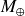

This page is for supplementary material of Sagan workshop 2022 poster by Yu Wang.
Please don't hesitate to contact us (Email) if you are interested!
This case assumes a planet with mass ~ 2.3

located at 5 AU. All length scale is in unit of local disk scale height.
Initially we run a simulation with pure H/He gas. After it reaches steady state, icy pebbles with density ratio of 0.01 to gas and stokes number (St) of 0.01 are injected from the outer boundary. We allow pebbles sublimation, but they only condense to tiny dusts with St = 0 considering slow collisional growth.
This case examines how much water can be delivered by pebbles after the envelope's temperature is high enough to vaporize ice totally before it reaches the core.
The simulation is shown in video in next page.
Panel1: pebble (st = 0.01) density. Panel3: dust density (st = 0)
Panel3: vapor fraction. Panel4: Temperature
Icy pebbles are accreted by the planet and sublimate to water vapor.
Part of the vapor is advected to the inner region, whether the another is advected outside to condense to icy dusty grains again.